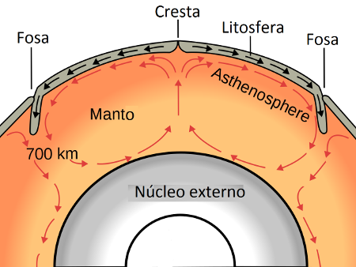

La energía que proviene del interior de la Tierra tiene efectos que pueden observarse en el exterior del planeta.
Las manifestaciones más importantes de la energía interna de la Tierra son el vulcanismo y los terremotos.
Todos estos fenómenos se pueden explicar teniendo en cuenta la estructura interna de la Tierra: una corteza terrestre o litosfera formada por placas sólidas que están sobre la astenosfera o parte superior del manto, en la cual se dan movimientos de convección provocados por el calor interno de la Tierra que emana del núcleo.
 |
|
Corrientes de convección |
Así, en las zonas profundas del manto, en contacto con el núcleo, el calor es muy intenso. Debido a este calor, grandes masas de roca se funden parcialmente y al ser más ligeras ascienden lentamente por el manto, produciendo una corriente ascendente de materiales calientes. Algunos de estos materiales alcanzan la litosfera, la atraviesan y contribuyen a la fragmentación de los continentes.
Entonces es cuando se producen los fenómenos del vulcanismo y los terremotos que veremos a continuación.
Vídeo
Este vídeo explica cómo se producen y transmiten estas corrientes de convección desde el interior de la Tierra: